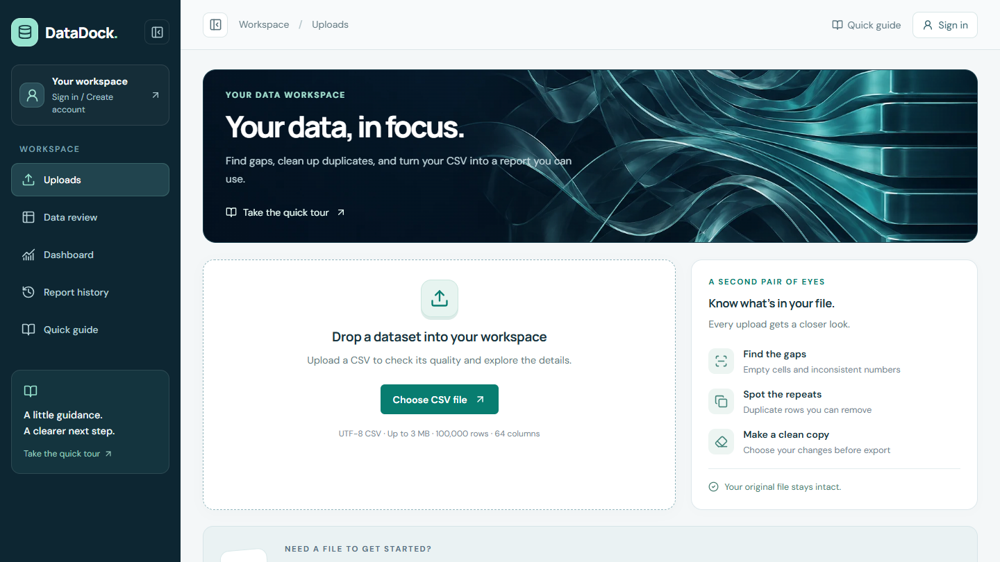

Python + React · Data quality
DataDock
Find missing values and duplicates in CSV files, explore charts, and export a cleaned copy. Accounts keep reports available across devices.
React · TypeScript · FastAPI · pandas · PostgreSQL

The problem
A spreadsheet can look usable while missing values, duplicate rows, or inconsistent columns make analysis unreliable. DataDock puts inspection and cleanup in one workspace.
How data moves
The React client sends CSV files to a FastAPI API. pandas and NumPy profile the data; SQLAlchemy stores reports and account ownership in PostgreSQL. Charts load separately from the initial upload screen.
What can fail
Malformed files, oversized uploads, and unavailable database connections need useful errors. Report access is checked against the current account or guest session. Deleting a report removes its stored data.
Checks and a recent improvement
The repository includes account-isolation and API tests, frontend checks, and Docker builds in GitHub Actions. Feedback about clipped navigation led to a scrollable sidebar, account controls near the top, and a collapse button.
Deployment
The public app runs on Vercel with Neon PostgreSQL. Docker, Nginx, and AWS deployment configuration are also in the repository; the published app uses Vercel.